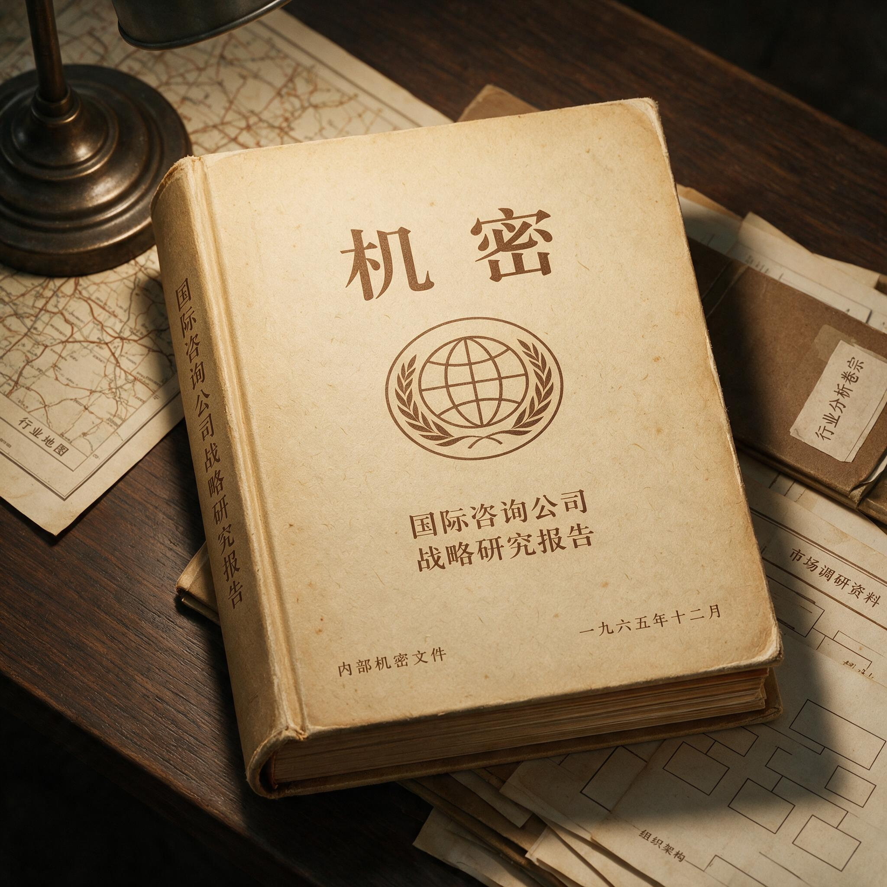

第 8 章
联销体压过心智图
一份标有“机密”字样的咨询报告在1998年3月送达娃哈哈总部。报告封面印着某国际战略咨询公司的标志，厚度超过两百页。扉页的项目编号旁，有一行手写的备注：“本报告基于三个月实地调研，访谈经销商四十七位、零售终端一百二十三家、消费者焦点小组十二组。”报告正文第一页的摘要栏里，用加粗字体列着核心结论：“娃哈哈品牌正面临严重的心智资源稀释。建议在十二个月内，将现有四十七个产品线缩减至十九个，集中资源巩固‘儿童饮品专家’的品牌定位。预计短期营收影响为负百分之八，长期品牌溢价能力提升空间为十五至二十个百分点。”
报告的第二部分是产品线评估矩阵。咨询团队建立了一套打分模型，横轴是“品类关联度”——即该产品与“儿童健康饮品”这一核心定位的契合程度，纵轴是“心智占位清晰度”——即消费者在无提示状

标有“机密”字样的厚咨询报告
AI 生成插图，非史实影像。
态下能否将该产品与娃哈哈品牌明确关联。AD钙奶的得分是九十二分，位列第一。儿童营养液的得分是八十七分，位列第二。
得分在三十分以下的，是一长串宗庆后熟悉的品名：娃哈哈平安感冒液、娃哈哈红豆沙、娃哈哈绿豆沙、娃哈哈冰糖银耳燕窝、娃哈哈清凉露。这些产品在市场上销量不大，但在联销体的货架上一直占着位置。报告估算，这些低分产品线合计占用公司约百分之八的营收，却消耗了超过百分之十五的渠道管理资源和广告预算。报告建议：全部砍掉。
报告的第三部分是国际对标案例。宝洁公司在1980年代曾面临类似的品牌稀释问题。当时的宝洁旗下拥有数十个品类、上百个品牌，销售额增长但利润率下滑。
1983年，宝洁启动“品牌精简”战略，砍掉了超过一半的产品线，将资源集中到口腔护理、婴儿护理、织物护理等核心品类。到1988年，宝洁的营收虽然下降了百分之十二，但利润率从百分之七提升到百分之十三，股价在五年内上涨了两倍。咨询团队用这个案例论证：战略性收缩带来的短期阵痛，会被长期品牌价值的提升所补偿。
报告还引用了可口可乐的案例。可口可乐在二战后的全球扩张中，始终坚持“一个品牌，一个品类”的聚焦原则。即便在推出雪碧、芬达等子品牌时，也严格保持各自独立的品牌身份和品类定位，从未让可口可乐主品牌横跨到碳酸饮料之外的领域。这种纪律性，在咨询团队看来，是可口可乐品牌价值能够持续积累的核心原因。
宗庆后花了一个周末读完了这份报告。他没有在报告上做任何批注。周一上午，他让秘书把上个月的销售报表送到办公室。报表是财务部按惯例编制的，厚厚一叠，按产品线和区域市场分类汇总。1998年第一季度，娃哈哈整体销售额同比增长百分之三十二。
纯净水品类增长最快，达到百分之四十七，主要拉动力来自三四线市场的渗透率提升。AD钙奶在高基数上继续增长百分之十八，增速虽然放缓，但绝对增量仍然可观。
而那些咨询报告建议砍掉的产品线——红豆沙、绿豆沙、冰糖银耳燕窝——合计贡献了超过五亿元的季度营收，毛利率在百分之二十五到百分之三十五之间，高于纯净水的百分之二十。这些产品在省会和地级市的销量平平，但在县城和乡镇市场，它们是经销商利润结构中的重要组成部分。
一个河南周口的县级经销商，每月从娃哈哈进货的总额大约在三十万元左右，其中AD钙奶和纯净水占百分之六十，红豆沙、绿豆沙、八宝粥等产品占百分之三十，其余是新品试销。如果砍掉那百分之三十，这个经销商的月度进货额会直接降到二十万元以下，利润相应缩水。他有两个选择：要么接受利润下降，要么从其他品牌那里寻找替代产品来填满货架和仓库。
宗庆后翻到报表的最后几页。那是联销体的经销商数量和终端覆盖的汇总数据。
截至1998年3月，联销体体系内有一千零几十个一级经销商，直接和间接控制的零售终端超过两百万个。这个网络覆盖了全国所有省会城市、百分之九十以上的地级市、百分之七十以上的县城，以及相当数量的重点乡镇。在娃哈哈的销售体系中，乡镇市场的销售额占比已经从1994年的不到百分之二十上升到1998年的百分之三十五，而且增速远高于城市市场。
这个结构的形成，与联销体的组织方式密切相关。联销体的经销商大多是本地化的私营批发商，他们用自己的资金、仓库和配送力量，把娃哈哈的产品送到县城和乡镇的每一个零售终端。一个乡镇小卖部的货架上，娃哈哈的产品往往占据一整排——从AD钙奶到纯净水，从八宝粥到红豆沙，品类齐全。店主不需要从多个供应商进货，一个娃哈哈经销商就能解决大半需求。这种“一站式供货”的能力，是联销体对终端控制力的核心来源，也是竞争对手最难复制的壁垒。
两份文件摊开在桌上。一份说，砍掉非核心产品线，聚焦儿童饮品，长期品牌价值会提升。
另一份说，那些非核心产品线正在为联销体网络提供利润粘性和货架占有率，砍掉它们，渠道的排他性就会下降。两份文件的逻辑都是自洽的。但它们指向相反的行动。
1998年4月，宗庆后召集了一次战略讨论会。咨询公司的合伙人带队参加，娃哈哈方面出席会议的包括销售部门、市场部门和财务部门的负责人。会议没有在总部大楼的正式会议室举行，而是选在了宗庆后办公室旁边的会客室。这个安排本身就是一个信号——这不是一次正式的决策会议，而是一次试探性的意见交换。咨询公司的合伙人做了大约四十分钟的陈述。他从消费者调研数据讲起。
焦点小组的测试结果显示，当被问及“娃哈哈是什么”时，城市消费者的答案集中在“AD钙奶”和“纯净水”上，但乡镇消费者的答案则分散得多，有人说是“八宝粥”，有人说是“红豆沙”，还有人说是“儿童营养液”。在无提示品牌联想测试中，娃哈哈的品牌联想词条多达二十七个，而同期的可口可乐只有五个。
合伙人的结论是：娃哈哈的品牌心智结构正在从“清晰”走向“模糊”，如果不加干预，模糊会进一步滑向“空心”。“当消费者不知道你代表什么的时候，他们就不会在任何一个品类中优先选择你。他们会把你当成一个‘什么都做、什么都不精’的通用品牌。通用品牌没有溢价能力，只能靠价格竞争。”
合伙人随后展示了品牌健康度指标。在“品牌推荐意愿”这一项上，娃哈哈的得分是百分之三十二，低于农夫山泉的百分之四十一和乐百氏的百分之三十八。在“品牌独特性感知”上，娃哈哈的得分是百分之二十九，低于行业平均水平。合伙人的解读是：这些指标的下滑，根源在于产品线的过度延伸稀释了品牌的核心认知。“AD钙奶建立的‘儿童健康饮品’认知，正在被红豆沙、绿豆沙、感冒液这些产品消耗掉。每一次消费者在货架上看到娃哈哈的感冒液，他们心里那个‘娃哈哈等于儿童饮品’的等式就被削弱一次。这种削弱是缓慢的、不易察觉的，但它是累积性的。等到发现品牌已经空心化的时候，通常已经晚了。”
合伙人最后提出了具体的行动方案。第一步，在六个月内将产品线从四十七个缩减到二十五个；第二步，在十二个月内进一步缩减到十九个；第三步，将释放出来的营销资源和渠道资源集中投入到AD钙奶、纯净水和儿童营养液三个核心品类上，用三年时间把“儿童健康饮品专家”的品牌定位做深做透。方案预估，短期营收将下降百分之八到百分之十，但三年内可以通过核心品类的增长弥补回来，长期品牌溢价能力将提升十五到二十个百分点。
宗庆后在整个陈述过程中没有打断。他坐在会议桌的一端，面前摊着那份咨询报告和那份销售报表。
合伙人讲完后，宗庆后没有直接回应，而是让销售部门的负责人把经销商进货结构的数据报了一遍。数据是分区域汇总的。在浙江、江苏、广东等沿海省份，AD钙奶和纯净水在经销商进货额中的占比超过百分之七十，非核心产品的占比不到百分之十五。但在河南、安徽、江西、湖南等中部省份，非核心产品的占比在百分之二十五到百分之三十五之间。
在四川、贵州、云南等西南省份，这个比例更高，有些县级经销商的进货额中，红豆沙、绿豆沙、八宝粥等产品占比接近百分之四十。销售部门负责人的汇报结束后，宗庆后问了一个问题：“如果现在把这些产品砍掉，这些经销商的利润缺口怎么补？”
咨询公司的合伙人回答，可以通过增加核心产品的库存深度和销售任务来弥补。“AD钙奶和纯净水的市场渗透率还有提升空间，经销商可以在核心产品上做更大的量。”宗庆后接着问：“在乡镇市场，AD钙奶的铺货率已经超过百分之九十，纯净水的铺货率也接近百分之八十。提升空间在哪里？”合伙人回答，可以通过促销活动和消费者教育来提升单店产出。宗庆后没有继续追问这个问题。
他换了一个角度：“你们说的‘心智资源’，能不能用销售额来衡量？”合伙人回答，品牌心智占位是一个长期指标，短期内很难直接转化为销售数字，但长期来看，清晰的品牌定位会带来更高的复购率和溢价能力。“宝洁的案例已经证明了这一点。”宗庆后点了点头，没有表示同意或不同意。
会议到此结束，没有做出任何决议。但宗庆后的态度已经通过他的提问方式传递给了在场的管理层。他关心的核心问题是渠道的稳定性和销售额的连续性，而不是品牌心智的长期积累。
这不是因为他不懂品牌——他一手打造了AD钙奶这个当时中国最成功的儿童饮品品牌，他对消费者认知的直觉判断力在公司内部无人能及。而是因为他手里的工具和面临的压力，决定了优先级。
联销体是一个巨大的、以利益为纽带的机器。这台机器的运转逻辑是：娃哈哈提供产品，经销商提供资金和终端覆盖，终端提供货架和消费者触达。经销商每年向娃哈哈缴纳一笔保证金，金额从几十万元到几百万元不等。这笔保证金为娃哈哈提供了稳定的现金流——1998年，联销体体系的保证金总额超过十亿元，相当于娃哈哈全年营收的百分之四十左右。作为交换，娃哈哈保证供货稳定和区域独家代理权。
在这个体系里，产品的种类越多，经销商从娃哈哈体系内能获得的利润来源就越多，对体系的依赖就越深。反过来，如果产品种类减少，经销商就必须从其他品牌那里寻找替代利润来源，联销体的排他性就会下降。排他性一旦下降，保证金制度的根基就会动摇。这是宗庆后不能接受的。
几个月后，宗庆后在内部会议上明确提出了“跟进策略”的思路。他没有使用“跟进策略”这个正式名称——这个名称是后来媒体和研究者总结的——但他的表述意思很清楚。他的原话大意是：创新是有风险的，让竞争对手先去探路。他们成功了，证明市场存在，我们就迅速跟进。我们有联销体，有广告能力，可以在最短时间内把产品铺到他们到不了的地方，用价格和渠道优势把市场拿过来。跟进是最好的创新。
这套逻辑不是从咨询报告的对立中突然产生的。它在AD钙奶的成功经验里已经埋下了种子。1996年AD钙奶的爆发式增长，在宗庆后看来，证明的不是“儿童饮品专家”这个定位的胜利，而是“广告加渠道”这套打法的威力。广告负责让消费者知道这个产品，渠道负责让消费者买到这个产品。两者相加，就能把一个品类从无到有地打穿。
至于这个品类是否与“儿童饮品专家”的心智定位一致，在宗庆后的判断框架里，不是最重要的变量。重要的是，联销体能不能把这个新产品铺下去，广告能不能把声量拉起来。
如果能，就可以做。1998年6月，娃哈哈推出了非常可乐。这是“跟进策略”的第一个试验品。
非常可乐是一款直接对标可口可乐和百事可乐的碳酸饮料。它的配方、口味、包装风格都与两大国际品牌高度接近。在盲测中，大多数消费者无法区分非常可乐和可口可乐的口感差异。但在品牌认知上，两者的差距是天壤之别。可口可乐在中国市场已经耕耘了近二十年，1979年重返中国后，通过持续的品牌建设和渠道扩张，在一二线城市建立了牢固的消费基础。1998年，可口可乐在中国的销售额大约六十亿元，品牌认知度超过百分之九十。百事可乐以年轻化定位紧随其后，在一二线城市的市场份额与可口可乐不相上下。两大国际品牌在碳酸饮料品类中的心智占位，按照定位理论的标准，几乎是无懈可击的。
任何新品牌想要在这个品类中正面挑战，在咨询公司的分析框架里，都属于典型的战略失误。但宗庆后的判断依据不同。
他看到的是另一组数据：可口可乐和百事可乐在中国市场的渠道覆盖，主要集中在省会城市、地级市和部分发达的县级市。在更下沉的乡镇市场，两大可乐的铺货率并不高——1998年的行业估算数据是，可口可乐在县级市场的铺货率大约在百分之四十到百分之五十之间，在乡镇市场的铺货率不到百分之二十。原因很简单：乡镇市场的单店销量低，配送成本高。可口可乐的配送体系是中心化的，从装瓶厂到区域仓库再到终端，物流成本随着终端密度的下降而急剧上升。对于追求单店产出效率的可口可乐体系来说，乡镇市场的投入产出比不划算。
而娃哈哈的联销体，恰恰在乡镇市场有着最密集的网络覆盖。联销体的经销商大多是本地化的私营批发商，他们用自己的三轮车、小货车把产品送到村头的小卖部，配送成本远低于可口可乐的集中式物流体系。这意味着，在乡镇市场，娃哈哈的渠道成本优势是结构性的，不是短期的促销战可以抵消的。非常可乐上市后，定价比可口可乐低百分之十五到百分之二十。
在乡镇市场的小卖部里，一瓶六百毫升的非常可乐零售价大约是一块五到两块钱，而同规格的可口可乐是两块到两块五。对于价格敏感的乡镇消费者来说，这个价差是有吸引力的。更重要的是，非常可乐的铺货速度。依托联销体网络，非常可乐在上市后的半年内，就进入了超过一百万个零售终端。在湖南、江西、安徽等中部省份的乡镇市场，非常可乐的铺货率在三个月内就超过了百分之六十，六个月后接近百分之八十。这个速度，是可口可乐在当时无法匹敌的。
到1999年，非常可乐的销售额突破了十亿元，在部分省份的乡镇市场，市场份额一度超过可口可乐——湖南乡镇市场第四季度的数据显示，非常可乐的市场份额达到百分之三十八，可口可乐是百分之二十七，百事可乐是百分之十五，其余是地方品牌。这是“跟进策略”的第一个重大胜利。
它用结果证明了宗庆后的判断：在中国市场，渠道覆盖可以压倒品牌心智。可口可乐在心智中占据了“可乐”这个品类，但非常可乐在货架上占据了可口可乐到不了的空间。
消费者走进村里的小卖部，想买一瓶可乐，货架上只有非常可乐。在这个时候，“心智占位”让位给了“货架占位”。品牌忠诚度在物理可及性面前，并不像理论预测的那样牢固。非常可乐的成功，进一步强化了宗庆后对联销体模式的信心，也让他更加确信咨询公司的那套品牌聚焦理论在中国市场水土不服。在非常可乐之后，娃哈哈又陆续推出了多个跟进型产品。
2001年，娃哈哈推出“娃哈哈茶饮料”，跟进康师傅和统一已经验证的茶饮料市场。2002年，娃哈哈推出“娃哈哈果汁”，跟进汇源果汁开辟的果汁品类。2005年，娃哈哈推出营养快线，进入乳饮料市场。当时，乳饮料品类已经有小洋人、旺仔等先发品牌，小洋人的“妙恋”系列在2003年上市后增长迅速，旺仔牛奶在儿童市场有着稳固的地位。
营养快线用“牛奶加果汁”的概念切入，广告投放密集——2005年的广告预算超过两亿元——渠道铺货迅速，当年销售额就突破了七亿元，随后几年一路攀升，到2009年单品销售额超过一百二十亿元，成为娃哈哈旗下继AD钙奶之后的第二个百亿级大单品。营养快线的成功路径与非常可乐高度相似：找到一个已经被验证的市场，用更强的广告声量和更密的渠道覆盖，迅速做大规模。先发者验证了需求的存在，跟进者用渠道和资本的优势收割市场。
在每一次跟进成功的背后，娃哈哈的产品线也在持续膨胀。到2000年代中期，娃哈哈旗下已经有超过一百五十个产品品种，涵盖饮用水、碳酸饮料、乳饮料、茶饮料、果汁、罐头、保健品、方便食品、休闲食品等多个品类。
联销体的货架上，娃哈哈的产品越摆越满。一个典型的县级经销商，同时经营的娃哈哈产品品种超过六十个。终端小卖部的货架上，娃哈哈的产品占据了饮料区的大半壁江山。
从AD钙奶到纯净水，从非常可乐到营养快线，从八宝粥到瓜子，消费者在货架上看到的，是一个无处不在的娃哈哈。
但消费者对娃哈哈品牌的认知也在变得越来越模糊。当市场调研公司问消费者“娃哈哈是什么”时，得到的答案五花八门：有人说“AD钙奶”，有人说“纯净水”，有人说“八宝粥”，有人说“营养快线”，还有人说“非常可乐”。没有一个统一的、清晰的心智标签。
在品牌联想测试中，娃哈哈的品牌联想词条在2005年增加到了三十一个，而同期的农夫山泉只有七个，王老吉只有五个。农夫山泉的品牌联想集中在“天然水”“有点甜”“健康”等少数几个关键词上，王老吉的品牌联想几乎全部围绕“怕上火”“凉茶”展开。而娃哈哈的品牌联想词条里，从“好喝”到“便宜”到“什么都卖”，没有一个占主导地位的认知焦点。
这就是咨询报告在1998年预警过的那种“心智资源稀释”。但在当时，这个预警被渠道数字的增长掩盖了。
从1998年到2006年，娃哈哈的销售额从二十多亿元增长到超过两百亿元，年均复合增长率超过百分之三十。联销体的经销商数量从一千家增长到超过两千家，覆盖的零售终端从两百万个增长到超过三百万个。利润总额、市场份额、行业排名，每一个数字都在上升。在这些数字面前，任何关于“品牌心智模糊化”的警告，都显得像是在担心一件遥远而无关紧要的事情。宗庆后在2003年的一次行业论坛上，被问及品牌聚焦的问题时，他的回答直截了当：“中国市场这么大，层次这么多，一个品牌可以做很多事情。关键是你有没有能力把产品铺到消费者面前。铺到了，他就买。铺不到，品牌再好也没用。”
但问题在于，这些增长数字的结构，正在悄悄发生变化。非常可乐在乡镇市场的高增长，在2000年代中期开始放缓。原因不是娃哈哈的渠道能力下降了，而是可口可乐和百事可乐开始下沉。
两大可乐公司调整了渠道策略。可口可乐在2003年启动了“乡镇拓展计划”，通过简化包装、降低出厂价、发展乡镇二级经销商等方式，逐步进入三四线市场和乡镇市场。到2006年，可口可乐在县级市场的铺货率已经从1998年的不到百分之五十提升到超过百分之七十，在重点乡镇的铺货率从不到百分之二十提升到超过百分之四十。百事可乐也采取了类似的策略。
当可口可乐和百事可乐也开始出现在村头小卖部的货架上时，非常可乐的价格优势就不再是决定性的了。消费者在价格差距缩小到一两个毛钱的情况下，开始倾向于选择他们“更熟悉”的品牌——那个他们在电视广告里看了二十年、在城市里随处可见的红色标志，或者那个与流行音乐和年轻偶像深度绑定的蓝色标志。非常可乐的销售额从2006年开始逐年下滑。
2006年的销售额从高峰期的十几亿元下降到不足八亿元，2008年进一步下降到五亿元左右。到2010年前后，非常可乐在娃哈哈整体营收中的占比已经大幅缩减，从一个明星产品变成了一个边缘产品。它在乡镇市场赢得的那些份额，大部分还给了可口可乐和百事可乐。
营养快线的情况稍好。它的品类占位——牛奶加果汁的复合饮料——在消费者心智中有一定的独特性，不像非常可乐那样直接面对国际巨头的品牌碾压。
但营养快线也面临着伊利、蒙牛等乳业巨头的挤压。伊利和蒙牛在消费者心智中有着清晰的“乳制品专家”定位，当他们推出类似的产品时——蒙牛的“奶特”系列、伊利的“谷粒多”系列——品牌信任度的优势是娃哈哈难以匹敌的。消费者在选择乳饮料时，更倾向于相信“做牛奶出身的品牌”，而不是“什么都做的品牌”。
这就是渠道驱动的增长模式所埋下的结构性代价。当渠道优势被竞品追赶、缩小或抵消时，企业发现自己没有在消费者心智中留下一个不可替代的位置。
占据了大量的货架，但没有占据任何一个心智位置。当市场结构变化——竞品下沉、渠道趋同、价格战常态化——那些曾经靠渠道碾压赢得的市场份额，就开始变得脆弱。消费者在货架前做选择的那几秒钟，心智中的那个“格子”开始起作用。如果那个格子是空的，或者装满了杂乱无章的信息，消费者就会转向那些格子清晰的品牌。
到2008年，娃哈哈的年销售额已经突破三百亿元，产品线超过两百个品种，联销体覆盖的零售终端数量达到三百五十万个。这些数字在当时的中国食品饮料行业，无人能及。
但同一年的品牌健康度调研显示，当被问及“提到娃哈哈，你首先想到的是什么”时，超过百分之六十的消费者给出的答案，仍然是“AD钙奶”——一个诞生于1996年的产品。娃哈哈用十二年的时间，把销售额翻了十几倍，推出了上百个新产品，打入了十几个品类，但在消费者心智中，它最清晰的标签，仍然停留在起点。这个标签支撑了娃哈哈的早期增长，但它无法支撑一个三百亿体量的企业继续向上突破。
当企业试图进入更高附加值的品类时——比如高端饮用水、功能性饮料——消费者心智中那个模糊的品牌形象，就成了最大的障碍。
1998年那份被拒绝的咨询报告，在档案柜里尘封了十年。报告最后一页的附录中，咨询团队列出了一组对标数据，并附了一行简短的注释：“品牌聚焦的纪律性，是成熟市场中最稀缺的战略资产。中国市场的渠道红利不会永远持续。当渠道结构趋同时，心智占位的差距将决定竞争格局。”
这行注释在1998年没有引起任何人的重视。十年后，当娃哈哈在多个品类同时面临专业品牌的竞争压力，当非常可乐在乡镇市场被可口可乐反超，当营养快线在乳饮料市场遭遇伊利蒙牛的挤压时，那些案例中的逻辑才开始显现出它们的重量。但此时，产品线已经膨胀到难以收缩的规模，联销体已经深度依赖多品类的利润结构，消费者心智中的品牌形象已经经过十年的稀释而难以聚焦。回头修正的成本，远比当年执行收缩的成本要高得多。
定位理论在中国市场的第一次重构，就这样在娃哈哈的会议室和联销体的货架上完成了。它被从一套关于心智占位的战略框架，重构为一套关于渠道占位的战术工具。在这个过程中，定位理论的术语被保留了下来——企业仍然在说“占位”“聚焦”“品类”——但它们的含义已经变了。
“占位”不再是占据消费者心智中的一个认知格子，而是占据经销商货架上的一个物理位置。“聚焦”不再是聚焦于一个清晰的品牌承诺，而是聚焦于用最快的速度把产品铺到最多的终端。“品类”不再是一个心智分类的概念，而是一个渠道分类的概念——什么品类好卖，就做什么品类。
定位理论被降格为广告口号，而非战略约束。这种重构的驱动力，来自中国市场在1990年代到2000年代的特殊结构：一个高速扩张的、渠道碎片化的、城乡二元分割的市场。在这个市场里，渠道的触达能力，确实在相当长的一段时间内，比心智的占位能力更能决定一个产品的生死。
一个产品能不能成功，首先取决于它能不能出现在消费者面前，其次才取决于消费者怎么看待它。宗庆后和他的联销体，抓住了这个结构性的机会窗口，用渠道逻辑打败了心智逻辑。这不是他的短视或失误，而是他在特定市场条件下做出的、在当时被结果证明有效的理性选择。
但窗口总会关闭。当渠道结构趋同、消费者选择过剩、品类专业化的趋势不可逆转时，那些被渠道成功掩盖的问题——品牌模糊、心智空心、溢价能力不足——就会浮出水面。而且，它们在浮出水面时，通常已经是结构性的、难以短期逆转的沉疴。
非常可乐在1999年的销售额是十亿元，可口可乐同年在中国的销售额是大约六十亿元。但在湖南、江西、安徽等中部省份的乡镇市场，非常可乐的市场份额在1999年第四季度达到了百分之三十八，可口可乐是百分之二十七，百事可乐是百分之十五。这个数字曾经是宗庆后最有力的论据。它证明了一件事：在特定的市场结构下，渠道可以打败心智。
但它没有证明的是另一件事：当市场结构变化时，那些靠渠道赢得的份额，有多少能够留下来。到2008年，非常可乐在全国碳酸饮料市场的份额已经下降到不足百分之三，可口可乐和百事可乐合计占据了超过百分之七十。在那些曾经被非常可乐统治的乡镇小卖部里，红色和蓝色的可乐罐重新占据了货架的最显眼位置。消费者用他们的购买选择，给出了最终的答案。这个答案的代价，娃哈哈用了十年时间来承受。